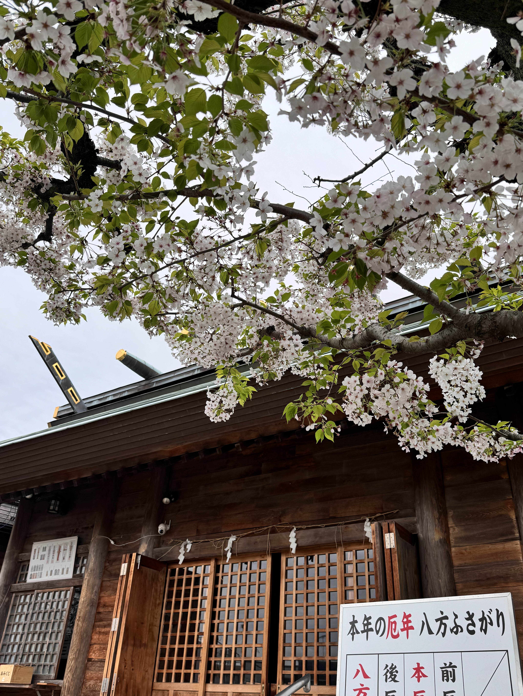
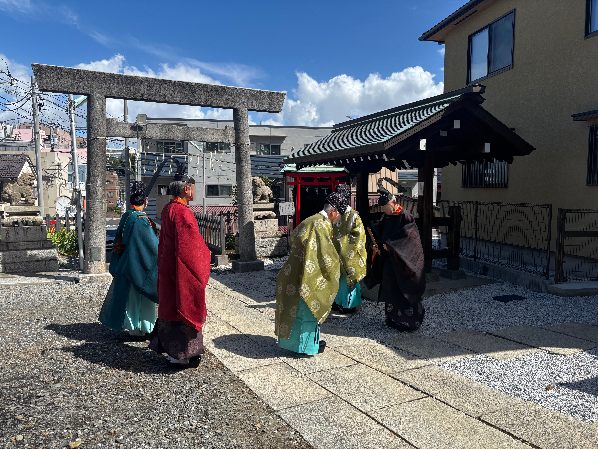
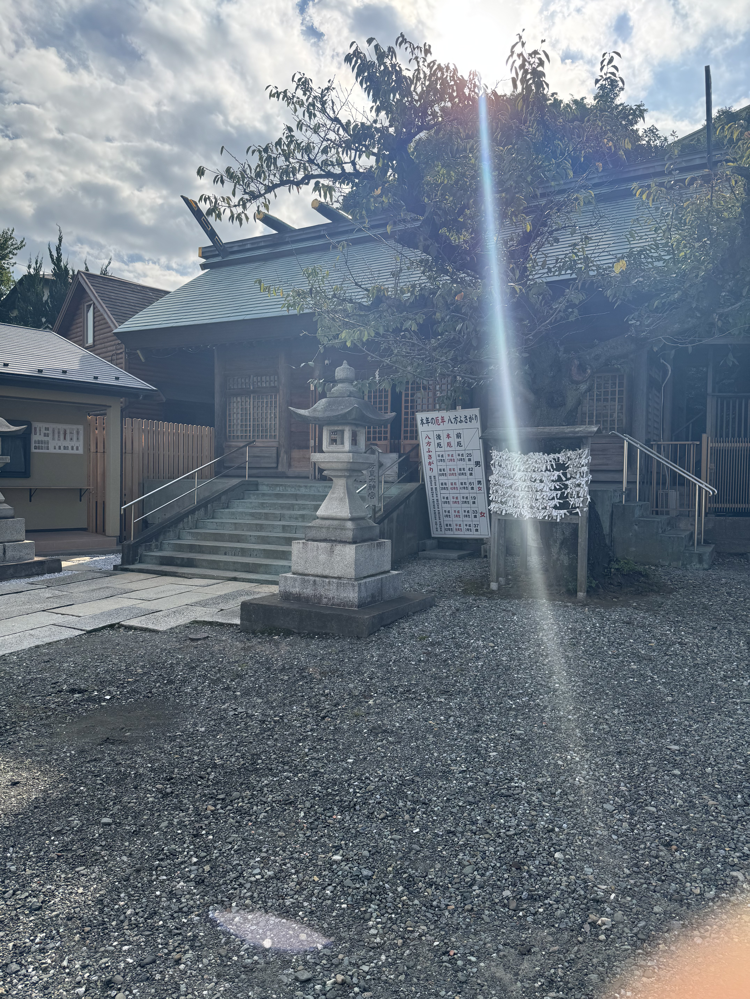
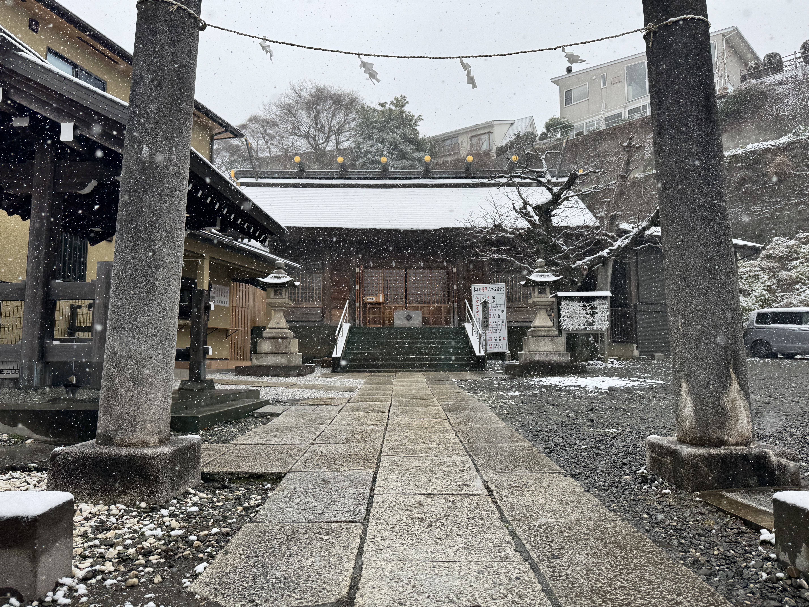

YOKOHAMA YAMATE SOCHINJU
皇太神宮
横浜山手 総鎮守
DEITY
御祭神
天照大御神
神奈川県横浜市中区西之谷町に鎮座する皇太神宮は、氏子崇敬者より「北方皇太神宮」と親しまれる横浜山手の総鎮守です。
天永年間（1110〜1112年）創建
四季の境内

春
夏
秋
冬
NEWS
お知らせ
- 2026.08.04 令和八年度 例大祭のお知らせ
- 2025.08.13 令和七年度 例祭のお知らせ
- 2025.07.03 ホームページをリニューアルしました
- 2025.02.11 横浜ケーブルビジョンで紹介されました